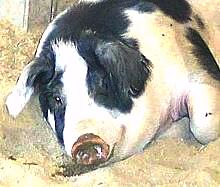

Pig - Prohibitions

Judaism forbids the eating of pork and describes pigs as "unclean".
A few minor Christian sects follow this rule, but Judaism's other
offspring, Islam, takes it to extremes. Jews are forbidden to eat pork,
but they have no prohibition for pig products such as leather. Islam goes
the whole hog, forbidding any contact with pigs or pig products whatever
on pain of eternal damnation, and no virgins.
The Hebrew texts do not explain the prohibition so it's been a matter
for conjecture. Most opinions have been presented by academics who have
little association with pigs (well, real pigs anyway) in their natural
habitat.
More on Pigs & Pork.
Trichinosis
is often proposed. It's a sometimes deadly, sometimes
debilitating disease, caused by a parasitic worm, and can be contracted by
eating undercooked pig, bear, dog, walrus or any other animal that is not
purely vegetarian. The incidence of debilitating trichinosis was probably
insufficient and insufficiently immediate for this to be the reason.
Western medicine did not fully accept consumption of undercooked pork as
the cause of infection until after 1850, and it hasn't discouraged other
cultures from heavy pig consumption.
Wallowing in Mud
has been proposed. Pigs can't sweat so need
water to keep cool on hot days, but pigs in a natural environment prefer
clean water if they can get it, and will keep themselves clean if
possible. In environments with a lot of biting insects they may prefer
a coating of clean mud, as do many humans native to those environments.
Economic
reasons have been proposed. Raising pigs would have
been an economic disaster for a dry land sheep and goat herding people,
but would have been popular among the hated rich Pagans in the river
valleys. Jewish leaders were anxious to make their people "different"
to keep them from skipping out and fading into some more comfortable
society, so this could well have been a consideration.
"Ideal Animals"
. Judaism is said to favor eating only
"ideal animals", those definitive of their type, in order to be more
in tune with God. Since pigs and fish without scales do not match the
"ideal" for their type they are forbidden. I suspect this explanation
was made up later as an explanation - and how do you explain a perfect
God making "imperfect" animals, anyway?
The Most Likely Reason
is known to any "less developed" rural
society where people live in close proximity to free range pigs. Pigs
consider human excrement a highly desirable gourmet treat. If they see
someone going out to do #2, they're right there (and they are reported
infallible judges as to whether it's going to be #1 or #2). In the
indelicate words of a Southeast Asian farmer, "What we shit here they
eat in the city". Some people have a problem with this, though there
is no health risk if slaughter is handled properly.
Of course our American grain fed hogs never have an opportunity to
indulge in this treat, but I remember the plight of an anthropologist
who got the "revenge" in a remote Indian village in Mexico. She had to
run outside and, as the pigs gathered, jump over a stone wall.
The pigs had to go around the wall, so she had time to take care of her
business and jump back before a stampede
descended upon her.
ap_pigz 06 - www.clovegarden.com
©Andrew Grygus - info@clovegarden.com - Linking to
and non-commercial use of this page permitted